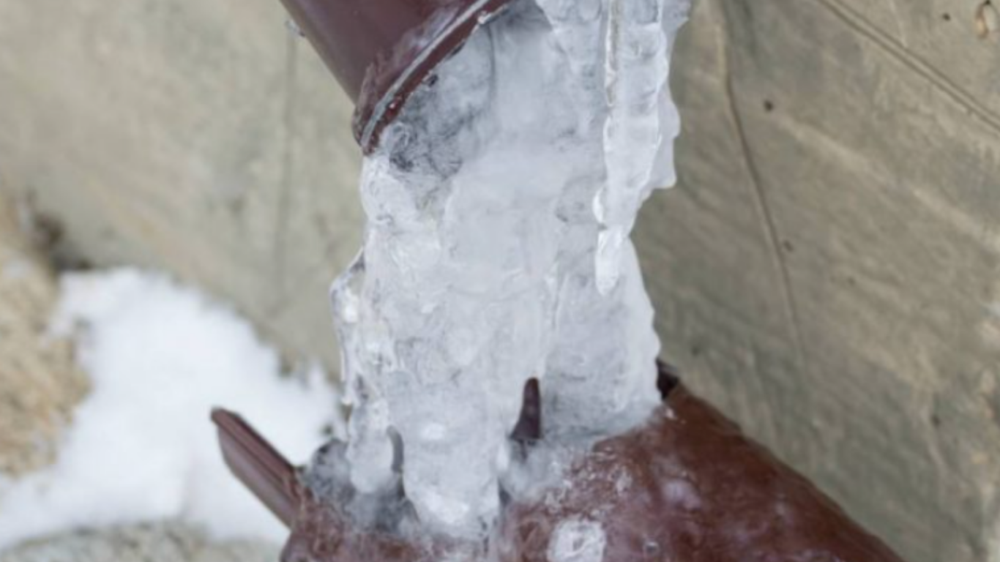

We provide 24/7 emergency restoration services that help DFW homeowners respond quickly after winter storms, limiting property damage and speeding up recovery.
Winter storms in North Texas can arrive with little warning, bringing freezing rain, sleet, high winds, and sudden temperature drops. Even a short period of severe weather can lead to burst pipes, roof leaks, and structural concerns. Having a clear winter storm restoration checklist allows homeowners to act confidently before, during, and after a storm to protect their property and reduce long-term repair costs.
Preparation is the first line of defense against winter-related property damage. Many DFW homes are not built for extended freezes, which makes preventative action especially important. Insulating exposed pipes, sealing small exterior gaps, and maintaining consistent indoor temperatures can significantly reduce the risk of frozen plumbing.
It is also important to inspect your roof and gutters before storm season. Loose shingles, damaged flashing, and clogged gutters increase the chance of water intrusion once ice or freezing rain accumulates. Taking time to address minor maintenance concerns can prevent larger structural issues after a storm passes.
Homeowners should also locate their main water shutoff valve and test it to ensure it works properly. In the event of a burst pipe, shutting off the water quickly can limit the extent of water damage and reduce restoration costs.
When temperatures drop below freezing, maintaining steady indoor heat helps prevent pipe expansion and rupture. Opening cabinet doors beneath sinks allows warm air to circulate around plumbing lines, reducing the likelihood of freezing.
If you lose power during a storm, avoid using alternative heat sources such as ovens or outdoor heaters inside the home. These can create fire hazards and additional risks. Instead, focus on insulating vulnerable areas and monitoring for signs of leaks or unusual sounds within walls or ceilings.
Watch for warning signs such as dripping water, ceiling stains, or sudden drops in water pressure. Early detection during the storm can prevent minor issues from becoming major emergencies requiring extensive water damage restoration.
Once conditions are safe, conduct a thorough inspection of your property. Start with the exterior. Look for damaged shingles, loose siding, cracked gutters, or fallen tree limbs. Even small vulnerabilities can allow moisture to enter and cause hidden damage over time.
Inside the home, check ceilings, walls, and floors for discoloration or warping. Pay attention to musty odors, which may indicate trapped moisture. Basements, crawl spaces, and attics should also be inspected carefully, as these areas often hold water without obvious signs.
If you discover damage, document everything with clear photos and notes. This information supports insurance claims and helps restoration professionals assess the situation accurately. Prompt contact with experienced restoration services can prevent further deterioration.
Frozen pipes are one of the most common winter storm issues in DFW. If you suspect a frozen line, turn off the main water supply immediately. Avoid using open flames to thaw pipes, as this can cause additional damage or fire hazards.
Instead, use safe methods such as warm towels or a hair dryer set to low heat, keeping it moving continuously. If a pipe bursts, act quickly:
Quick action limits structural damage and reduces the likelihood of mold growth in the days following a storm.
Secondary damage often occurs when moisture is left untreated. Even small amounts of water trapped behind walls or under flooring can weaken materials and create conditions for mold. Professional moisture detection tools help identify hidden pockets that are not visible to the eye.
Drying equipment such as air movers and dehumidifiers plays a critical role in restoring affected spaces. Acting within the first 24 to 48 hours significantly improves outcomes and limits reconstruction needs. Homeowners who delay response often face more extensive repairs later.
In addition to water concerns, winter storms may create fire hazards from improper heating methods. The National Weather Service recommends using approved heating equipment safely and maintaining working smoke detectors during extreme cold events.
Safety remains the top priority. Families want assurance that their home is structurally sound and free from hidden hazards. Clear communication from restoration professionals helps reduce uncertainty during stressful situations.
Insurance support is another major concern. Many homeowners feel overwhelmed navigating claims while managing repairs. Professional documentation, detailed assessments, and guidance through the process provide clarity and reduce delays.
Finally, speed matters. Quick mitigation not only limits physical damage but also shortens the time required to return to normal routines. Having a trusted local team ready to respond makes a significant difference during unpredictable winter conditions.
Winter storms in DFW can cause unexpected disruption, but preparation and rapid response protect both property and peace of mind. From frozen pipes to roof leaks and interior flooding, acting quickly prevents minor issues from escalating.
If you’re looking for reliable winter storm restoration services in North Texas, SWAT Restoration provides 24/7 emergency response, water removal, and full reconstruction support. Our team assesses damage thoroughly, documents every detail for insurance purposes, and works efficiently to restore your home with care. When severe weather hits, having experienced professionals on your side ensures a smoother path from damage to recovery.